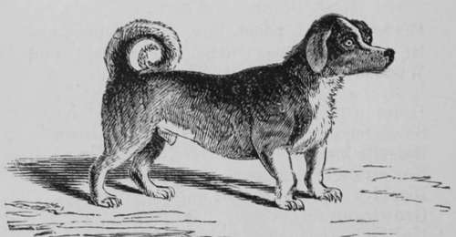

Turnspit Dog
Description
This section is from the book "Breeding, Training, Management, Diseases Of Dogs", by Francis Butler. Also available from Amazon: Breeding, training, management, diseases.
Turnspit Dog
Yellow or brown, with muzzle often black, Low bandy legs, and disproportioned back ; Eve of intelligence, car rather small, Nose quite extensive, teeth, the best of all; Short coat, stout built, inelegant in form, Problem unsolved, where Turnspit first was born ;
His home the kitchen, 'prenticed to the cook, He notes her movements, scans her every look. When fat and lazy, and for work unfit. Is oft' incog., when called to turn the spit; Hides in the garret, or would fain be laine, So dinner's lat°, and Bandy gets the blame. Defends his post beside the kitchen fire; Nor stranger dare provoke his latent ire ; Displays his ivories, and with angry tone, Growls out menacingly, "let me alone." Unlike his compeers, never made a pet, Confined at home, and at his duties set, His working time p'raps three scant hours a day,
From them, unguarded, slyly steals away. Although his master often may you greet, Ashamed t' acknowledge Bandy in the street: Alone perchance you'll find him on the jog, The awkward, crooklegged, fireside kitchen dog.
Wounds arc seldom difficult of cure, and will heal up without our assistance, unless the system be disordered ; in which case, cooling medicines may be necessary to purify the blood and facilitate the efforts of Nature. If a wound be large, it should be sewed up with thread; by uniting the parts, it will heal the sooner. Oil of Tar and olive-oil in equal parts will both cleanse and heal a wound. " Butler's Mange Liniment" is also a speedy cure. Any kind of grease is soothing, but should have no salt in it, unless the wound be foul, in which case it may be washed occasionally with weak alum water, which is very cleansing and prevents the formation of proud flesh. For mange sores, use "Butler's liniment." In any case, keep the animal cool and quiet ; provide him with light food, fresh water and comfortable lodgings.
Swellings in the neck and throat will sometimes make their appearance, so unexpected and suddenly, that we are at a loss to account for their origin. "With external swellings, I have seldom found any difficulty. Spirits of turpentine, oil of Tar and olive-oil in equal parts form an excellent liniment, which should be well rubbed in morning and evening. Should lancing be necessary, it should be done by some one that understands it, and this not till the inflammation has pretty well reached its height. Cooling medicines may be necessary to purge the system and lessen the tendoncy to putrefaction in the humors. Any strong liniment will be of service, and if none can be had, bathing the part in eold water may effect a cure, or if you will tie the animal up in a cool place, feed him light, give him a regular supply of fresh water and a little cooling medicine, a cure will generally be effected. Nature, with a little encouragement knows well how to reject impurities, that have been forced upon her. Should the swelling arise through any foreign object having poisoned the part, every effort should be made to extract it; if this cannot be effected, linseed-meal with a little oil of Tar may be used as a poultice, or a pilch-plaster with a hole in the centre be placed over the part. When the swelling is inside the mouth or in the throat, it becomes more serious and difficult of management, as when there is irritation or pain inside the mouth, a dog gets restless and is sometimes difficult to handle, without endangering one's lingers. Blisters and liniments may, however, be applied to the neighboring parts. Objects stuck in the throat should be pushed down with the first suitable thing that may present itself, as, if the animal be choking there is no time to be lost. A pliable twig, a teaspoon, or tablespoon will answer the purpose; a piece of whalebone will do better. For any settled ailment of the throat, an occasional emetic of common salt will generally greatly relieve the suffering, by cleansing the diseased part, ridding it of purulent matter and perhaps bursting the sore. But with all swellings in the interior of the mouth and neck, I recommend the animal's being safely chained, as he will sometimes becomes exceedingly irritable; so much so, as not to produce Hydrophobia, but such a nervous timidity (I presume) that he dreads the approach of any one, and is willing to attack anything, in apparent self-defence. I have seen several cases of this kind, where my advice has been luckily attended to, thus avoiding any amount of alarm, if not of decided danger. For all disorders of the neck, throat, etc, the bowels should be kept in a proper state, the diet should be light, and the dog should be kept as quiet as possible. When he is unable to eat solid food, he should be supplied with soup,milk, etc. A teaspoon of olive-oil, now and then will afford the throat some relief, as well as impart nourishment to the animal.
Turnspit Dog.
Continue to:
- prev: Sprains. Dislocations, Fractures, Wounds, Swellings In The Neck And Throat
- Table of Contents
- next: Pug-Dog